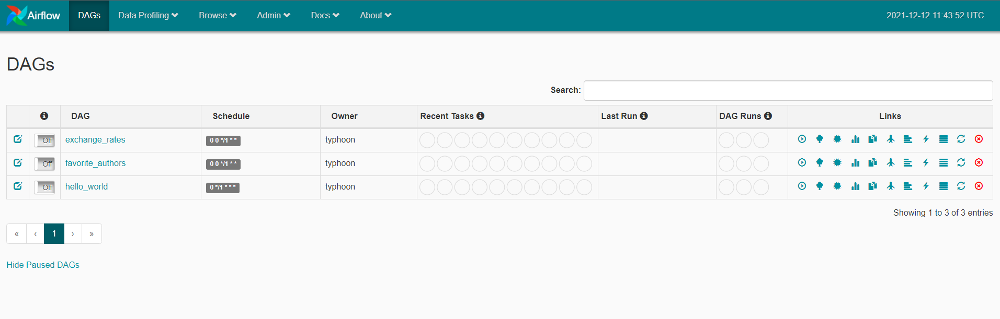

Installation
Typhoon can be installed locally with pip or using docker. To test airflow (especially on Windows) we recommend using the docker version.
Use the DEV version when installing it locally.
The [dev] version comes with all the libraries and tools that make development easier.
`pip install typhoon-orchestrator[dev]`
The production version is lightweight for use with Lambda.
Hello World - 5 min walkthrough
After installation we recommend following Hello World example. You can use the rest of 'Getting Started' section here for details in each step should you need it.
with pip
Optionally - Install and activate virtualenv
python3 -m venv typhoon_venv
source ./typhoon_venv/bin/activate
Install typhoon:
pip install typhoon-orchestrator[dev]
Creating your new project
Inside your terminal navigate to where you want to create your new project directory. Then run:
typhoon init hello_world
cd hello_world
This will create a directory named hello_world that serves as an example project. As in git, when we cd into the directory it will detect that it's a Typhoon project and consider that directory the base directory for Typhoon (TYPHOON_HOME).
Checking 'typhoon status'
typhoon status
Result:

We can see that it's detecting the project home as well as a SQLite metadata database that just got created. It's also warning us that our DAG uses a connection that is not defined in the metadata database and suggesting us a fix.
We will see in the next section 'Connections' how to add these.
Bash/ZSH/Fish auto-complete
- bash eval "$(_TYPHOON_COMPLETE=source_bash typhoon)"
- zsh eval "$(_TYPHOON_COMPLETE=source_zsh typhoon)"
- fish eval "$(_TYPHOON_COMPLETE=source_fish typhoon)"
With Docker and Airflow
To deploy Typhoon with Airflow you need:
- Docker / Docker Desktop (You must use WSL2 on Windows)
- Download the docker-compose.yaml (or use curl below)
- Create a directory for your TYPHOON_PROJECTS_HOME
The following sets up your project directory and gets the docker-compose.yml:
TYPHOON_PROJECTS_HOME="/tmp/typhoon_projects" # Or any other path you prefer
mkdir -p $TYPHOON_PROJECTS_HOME/typhoon_airflow_test
cd $TYPHOON_PROJECTS_HOME/typhoon_airflow_test
mkdir src
curl -LfO 'https://github.com/typhoon-data-org/typhoon-orchestrator/blob/master/docker-compose-af.yml'
docker compose up -d airflow-init # initiates airflow
docker exec -it typhoon-af bash # Then you're in the typhoon home.
airflow initdb # !! To initiate Airflow DB !!
typhoon status # To see status of dags & connections
You should be able to then check typhoon status and also the airlfow UI at http://localhost:8088
This runs a container with only 1 service, typhoon-af. This has both Airflow and Typhoon installed on it ready to work with.
Directories
Some directories are mounted which synchronizes files between your computer and the container.
- ./data_lake - for landing files (as a local dev environment)
- ./airflow_dags - where typhoon compiles your Airflow DAGs to
- ./src - Your Typhoon project
- ./src/dags - Where you develop your Typhoon YAML DAGs
Development hints
So you should develop your dags in ./src/dags using your local editor (not within the container - the files sync).
You then access the docker container tyhpoon-af to use typhoon
docker exec -it typhoon-af bash
Inside the container bash:
typhoon status
typhoon dag build --all
If they successfully compile they will appear in ./airflow_dags, and also in the Airflow UI.
You may also need to restart the Airflow Container to see this list update.

Next steps: add connections shown in typhoon status before running - Hello World - 5 min walkthrough
After installation we recommend following Hello World example. This shows a ste-by-step of adding the connections, building and running our Hello World DAG.
typhoon connection add --conn-id data_lake --conn-env local
typhoon connection add --conn-id echo --conn-env local
typhoon dag build --all